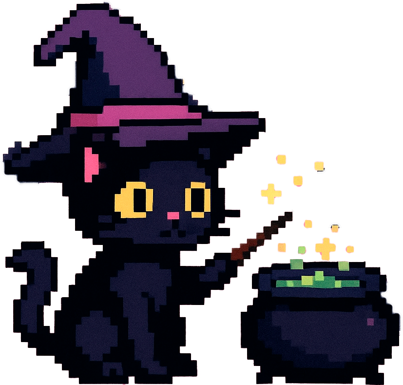

✨ Food Wizzard ✨

This is your food wizaed! Press 'CLIC' for generate today's dinner scheme!
import random
from js import document
def play_click_sound(event=None):
click_sound = document.getElementById("click-sound")
click_sound.currentTime = 0
click_sound.play()
def generate_dinner(event=None):
protein = ["fish","meat","chiken","tofu","chickpea","lentils","beens","eggs"]
long_carbs = ["whole grain pasta","brown rice","potato","batat","buckweat","quinoa","glass noodle","soba"]
style = ["asian","mexican","SLAVIC","amerikkkan","frmrmeowch","itttalian","indian"]
veg_for_salad = ["carrot","cucumber","tomato chemry","bell pepper","broocooli","pinapple","mamngo","tomato biggg","cormn","pea","green beens","radish","avocado","olives","apple","celery"]
salad_base = ["lettuce","arugula","isberg","napa","romano","basic cabbage","spinach"]
cooking_veg = ["carrot","tomato biggg","broocooli","eggplant","green beems","zuccini","onion","bell pepper","pumkim","califlower"]
salad_dress = ["yougut","lemon oil","honey mustard","sweet chilli","soy sauce vinehar","herbs oil","salmsa"]
snamks = ["see weed","numts","fruits","antremes","jerks","popcormn","c h e e z e"]
dish_type = ["soup", "stewm", "baked", "fresh", "stir fry", "b o u w l", "pasta"]
random_protein = random.choice(protein)
random_long_carbs = random.choice(long_carbs)
random_style = random.choice(style)
final_salad = random.sample(veg_for_salad, 3)
random_salad_base = random.choice(salad_base)
final_veg = random.sample(cooking_veg, 3)
random_salad_dress = random.choice(salad_dress)
random_snamks = random.choice(snamks)
random.shuffle(dish_type)
random_dish_type = random.choice(dish_type)
result = f"""🍴 TODAY'S MEAL:
{random_protein} base with {random_long_carbs} for garnish, and with
cooking vegs like {', '.join(final_veg)}!
Prepare as {random_dish_type} in {random_style} style!
AAAAND base for salad is {random_salad_base} with {', '.join(final_salad)} (+ {random_salad_dress} dressing!)
wait a sec....how can i forget about SNAK??? today's snak IIIIS {random_snamks}"""
document.getElementById("output").innerText = result
def on_button_click(event=None):
play_click_sound()
generate_dinner()